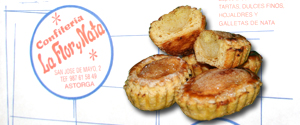
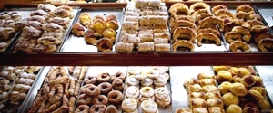

Huevos, harina, margarina…. y una fórmula secreta que se trasmite de padres a hijos son los únicos ingredientes que forman parte de los Merles.
Los Merles están recomendados para toda la familia.
Al no utilizar conservantes, colorantes, o aditivos industriales en la elaboración de los merles, presentamos un producto fresco y natural ofreciendo un sabor superior y mayor nutrición que otros productos industriales.
Elaboración Artesana
En la Confitería La Flor y Nata de Astorga elaboramos los Merles de forma artesanal en nuestro obrador.
Somos la 3ª generación de Artesanos confiteros
Materias primas de excelente calidad, una elaboración casera con mínima manipulación de los productos y un preciso horneado, son los principales ingredientes que utilizamos para ofrecer todos los días los afamados Merles de Astorga desde hace más de 75 años.

Otras Especialidades

En la Confitería La Flor y Nata de Astorga también hacemos otras especialidades con la misma calidad que nuestros famosos Merles.